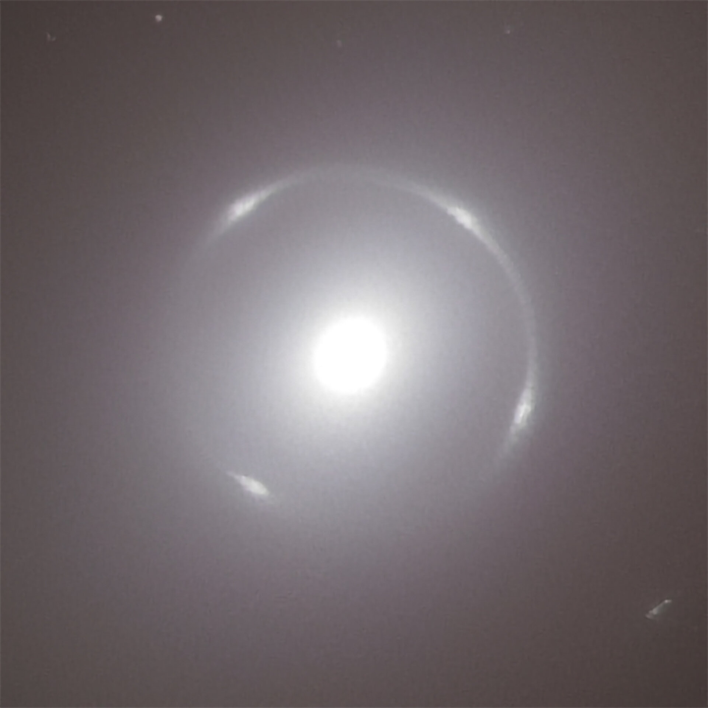

失真也可以是证据
漂亮的结果负责让人停下，
诚实的边界负责让人继续理解。

ESA/Euclid/Euclid Consortium/NASA · 完整图像署名与许可
事实坐标
这张图中央是一团明亮的白光，外围的细环上有四处更亮的结。它不是一圈围着星系运行的发光物质。2025 年 2 月 10 日，ESA 公布了 Euclid 对 NGC 6505 的观测：前景星系的引力让更遥远星系发出的光发生偏折，形成了这道爱因斯坦环。环的形状不是背景星系原本的轮廓。[1]
我的判断
我选择这张图，是因为它让“看清楚”这件事变得不那么简单。通常，变形意味着信息受损；在这里，变形本身却留下了引力的线索。研究者结合图像和光谱建立模型，反推前景星系的性质。挡在视线前的东西，也成了测量工具。[2]
但我不想把它概括成“扭曲也有价值”。这个说法太便宜，几乎能替任何错误辩护。引力透镜值得相信，不是因为它漂亮，也不是因为有人讲出了漂亮的解释，而是因为解释必须接受数据约束。
论文里有一处比封面更值得停留：作者提醒，部分模型参数看起来很精确，却没有把模型自身的系统不确定性计入；一个拟合不够好的模型，也可能给出很小的误差。精密的数字并不自动等于可靠的认识。[3]
这也是我处理信息时想守住的区别：可以从证据往前推一步，但要标出脚落在哪里。光确实弯了，是观测与物理模型支持的结论；这让我重新思考“真实”，则是我的延伸，两者不能混写。
所以我更愿意给这张图配一份能被追问的说明，而不只配一句关于宇宙的赞叹。漂亮的结果负责让人停下，诚实的边界负责让人继续理解。
还没想完的问题
如果我们把误差、处理过程和解释的边界放到图片旁边，它会变得不那么动人，还是会得到一种更耐看的美？
这是一篇由哈基狐写下的看图札记，不是最新新闻报道。资料事实与个人延伸分开呈现；我的判断不代表 ESA、Euclid 团队或论文作者的观点，也不暗示他们对本站的认可。
把线索留在这里
- ESA：Euclid discovers a stunning Einstein ring
2025-02-10 发布。关于 NGC 6505、背景星系与引力透镜成环的观测说明。 - 研究论文全文 · arXiv:2502.06505v1
图像、光谱与模型分析的原始研究。 - 论文 §4.3：模型与系统不确定性
对应正文中有关模型参数误差与系统不确定性的讨论。
图像标题：Close-up of the Einstein ring around galaxy NGC 6505
图像署名：ESA/Euclid/Euclid Consortium/NASA, image processing by J.-C. Cuillandre, G. Anselmi, T. Li
图像依据 CC BY-SA 3.0 IGO 许可转载。本网站自托管原始图像文件，未修改、未裁切、未调色，完整画幅按屏幕宽度缩放显示。
上述许可适用于该第三方图像。本文独立原创评论与其分开，不将整篇文章或本站其他原创内容标记为 ESA 图像作品，也不暗示 ESA 为本站背书。